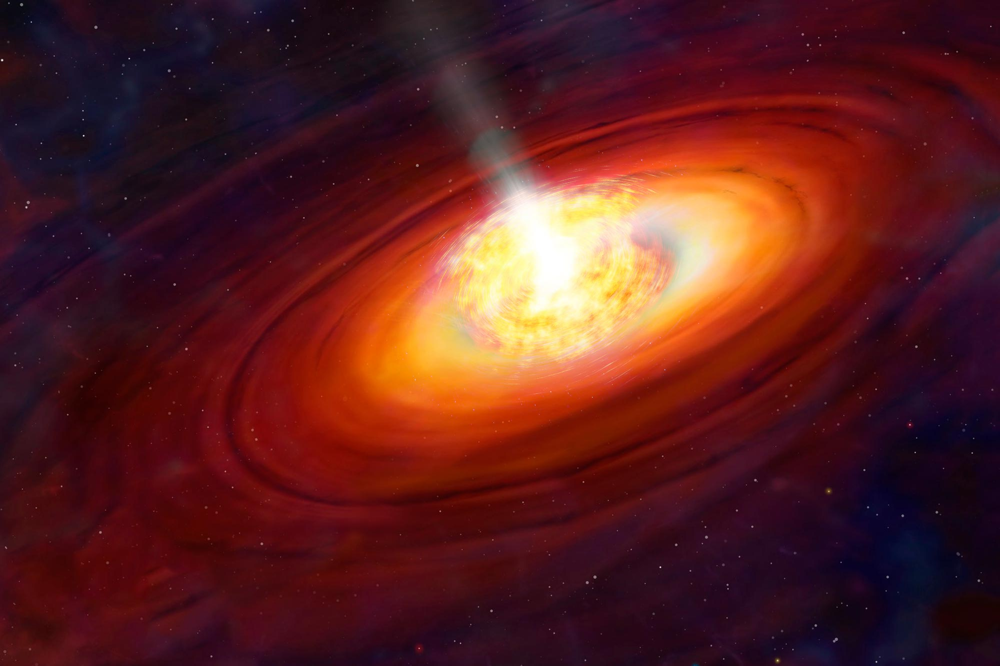

4.5 billion years ago, in the place of our solar system, there was a stellar nursery: a dense cloud of hydrogen gas and dust. In the middle of that nursery was a hot star that burned up all of its fuel and ended its life in a massive supernova explosion. That explosion destroyed the stellar nursery, causing all of its gas and dust to begin falling in on itself. Within about 100,000 years, the gravity and angular momentum of all that material flattened it into a dense disk of hot gas. The center of the disk, where the molecules had the most energy and heat, began to clump together to form a protostar.
That protostar was the beginning of our Sun. Protostars can’t go through the process of fusion because they are not yet hot enough in their cores, so they are just balls of collapsing gas and dust. As time goes on, the protostar collects more and more material from the disk, eventually becoming large and hot enough to mature into a main-sequence star, like our Sun today. During this time, the disk continued to take shape and began to form everything else we know in the solar system.

At different points in the disk, the gas and dust began to heat up, forming droplets of molten rock. They collided and smashed together, forming smaller celestial bodies such as asteroids. The violent and chaotic nature of this time caused millions of collisions to take place, forming larger and larger bodies, eventually leading to the beginnings of our modern planets. As Jupiter formed, it is believed to have moved inward in the solar system. This movement disrupted the asteroid belt, flinging these celestial bodies inward toward the terrestrial planets and the Sun. Asteroids rained down on the Sun, Mercury, Venus, Earth, and Mars, colliding with them, reshaping the inner solar system, and creating large basins on the Moon, Mars, and Mercury. Some of these asteroids might have delivered organics to Earth that were the building blocks of life. This period of our solar system is called the Late Heavy Bombardment, or the Lunar Cataclysm.
As the solar system began to cool and stabilize, the modern planets began to take shape and form into the way they are today. Every single mountain, crater, moon, asteroid, planet, comet, and atom in your body came from that initial stellar nursery that formed our solar system. Everything you see and touch, from your phone to your car to your house, came from the hot dust and gas that violently collided and coalesced.
With that bizarre fact in mind, stay curious and nebular.